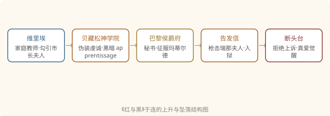

红与黑
一、基本信息
| 作者 | 司汤达 |
|---|---|
| 成书/出版 | 1830年出版（Britannica） The Red and the Black — Encyclopaedia Britannica（百科全书） |
| 国别/地区 | 法国 |
| 时代 | 近代 · 19世纪 |
| 体裁 | 长篇小说（心理现实主义） |
| 语言 | 法语 |

二、创作背景
标题的解读（Britannica）：'the title refers to the choice between the army (red) and the church (black)'——红指军装（拿破仑时代平民上升之路）、黑指教士黑袍（复辟时代的出路）；小说背景正是波旁复辟王朝（1815—30，Britannica：Set during the Second Restoration (1815–30)）。
取材原型：1827—28年马蒂厄·安托万·贝尔泰（贝朗热案）——神学院学生因情杀人被判死刑的案件（原型为通说，待核）。
时代语境：复辟王朝的'恐惧与告密气氛'（Britannica：the 'climate of fear and denunciation in Restoration France'）——秘密会社、教会势力与自由派报纸的角力是小说的政治底色。
三、内容脉络
上卷：维里埃小城木匠之子于连·索雷尔——'an ambitious, intelligent youth'（Britannica）——精通拉丁文，被市长德·瑞那聘为家庭教师；以'报复上流社会'的心态勾引市长夫人，得手后被迫入贝藏松神学院（Britannica：He spends time in a seminary），受院长彼拉神父庇护。
中段：经彼拉推荐入巴黎木尔侯爵府任秘书（Britannica：He moves to Paris），以冷峻才干获得信任，转而征服侯爵之女玛蒂尔德——'seduces Mathilde, the aristocratic daughter of his second employer'（Britannica）；玛蒂尔德怀孕，侯爵被迫授其军职与爵位。
结局：德·瑞那夫人在教士指使下写信揭发于连（'毁掉他的婚姻'）；于连枪击前来做弥撒的瑞那夫人（Britannica：his execution for attempting to murder Mme de Rênal，被以'谋杀未遂'判处死刑）；狱中与瑞那夫人重燃真情，拒绝上诉与营救，从容上断头台；瑞那夫人三天后抱子而逝。
四、主要人物表
| 人物 | 身份 | 说明 |
|---|---|---|
| 于连·索雷尔 | 木匠之子 | 野心家与殉道者的合体：以拿破仑为偶像在教会时代被迫'伪装'——Britannica：seeing himself as 'an unsentimental opportunist' |
| 德·瑞那夫人 | 市长夫人 | 天真纯洁的爱与道德的痛苦，全书的良心 |
| 玛蒂尔德·德·拉莫尔 | 侯爵之女 | 以'玛格丽特王后'式的浪漫自居——傲慢而疯狂的爱情 |
| 德·拉莫尔侯爵 | 巴黎贵族 | 复辟时代权力网络的枢纽 |
| 彼拉神父 | 神学院院长 | 于连的保护人，耿直的教士 |
| 傅凯 | 木材商挚友 | 友谊与另一种人生的可能性 |
五、主题与艺术特点
- 小人物的上升政治学：在复辟王朝封闭社会里，'才干'唯有伪装成'虔诚'才能通行——于连的两副面具（傲骨/奴态）是时代的产物。
- 爱情与野心的纠缠：瑞那夫人（真爱）与玛蒂尔德（征服欲）——两种爱情对应两种'红与黑'的选择。
- 心理深描：于连每一步行动的自我辩论（自尊/算计/悔意）——'心理现实主义'的奠基之作（Britannica 认其为 Stendhal's major work）。
- 反讽与判断：叙述者对整个社会的冷嘲（'政治在文学中如同音乐会上的枪声'——其《阿尔芒斯》题词名言转用，待核）。
六、影响与评论
- Britannica（A&P 条目）：'Generally regarded as Stendhal's major work and one of the greatest 19th-century novels'（司汤达主要作品、19世纪最伟大的小说之一）。
The Red and the Black — Encyclopaedia Britannica（百科全书） - Britannica：对复辟王朝'恐惧与告密气氛'与庸俗资产阶级的批判——政治小说的先声。
The Red and the Black — Encyclopaedia Britannica（百科全书） - 接受史：生前几乎无读者，19世纪末起'红学'式的司汤达研究兴起；纪德、普鲁斯特、伍尔夫皆推崇（通说待核）。
Stendhal — Encyclopaedia Britannica (by Victor Brombert)（百科全书） - 改编：1976年电影（通说待核）、2000年前后的多次电视改编；'于连'成为法语世界'野心青年'的代名词（通说待核）。
The Red and the Black — Encyclopaedia Britannica（百科全书）
七、阅读建议
- 复辟王朝政治背景（贵族流亡者、教士势力、秘密会社）需要注释。
- 上卷副题'现实'与下卷'巴黎'结构不对称，注意节奏差异。
- 于连的心理独白密集且自我矛盾——需跟随其自我辩论的层次。
- 郝运译《红与黑》（上海译文出版社）：通行译本。
- 闻家驷译本（人民文学出版社）：另一经典选择。
- 英译：Robert M. Adams 或 Burton Raffel 译本（通说待核）。
先读第1—10章（家庭教师与瑞那夫人）与下卷（巴黎与玛蒂尔德）→ 通读 → 精读结尾狱中五章（于连的'觉醒'演讲）→ 对照《高老头》看法国19世纪小说的两种社会剖析。
八、待核实
- 出版细节（1830年11月 Ambroise Dupont 书局说）待核。
- 贝尔泰案件原型（Courtier-Aubert 案？）的考订细节待核。
- '小说是一面镜子'题词出处（《阿尔芒斯》还是《红与黑》各卷题词）逐条核对待完成。
- '1880年读者'预言的书信原文待核。
本页主要来源
- The Red and the Black — Encyclopaedia Britannica（百科全书）
- Stendhal — Encyclopaedia Britannica (by Victor Brombert)（百科全书）
司汤达的其他收录作品：红与黑